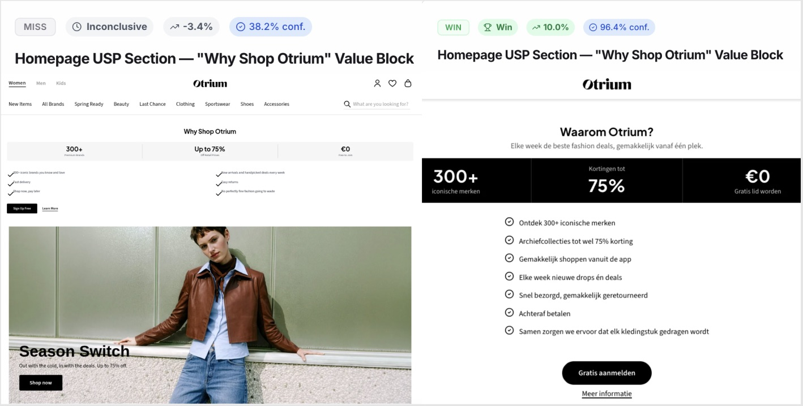
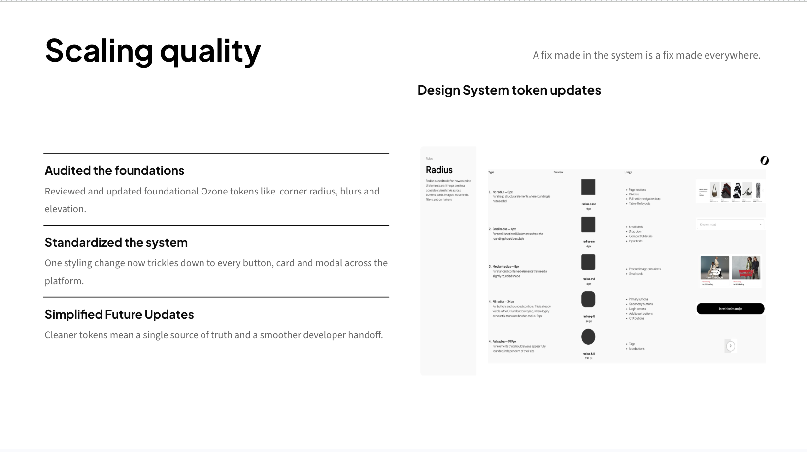
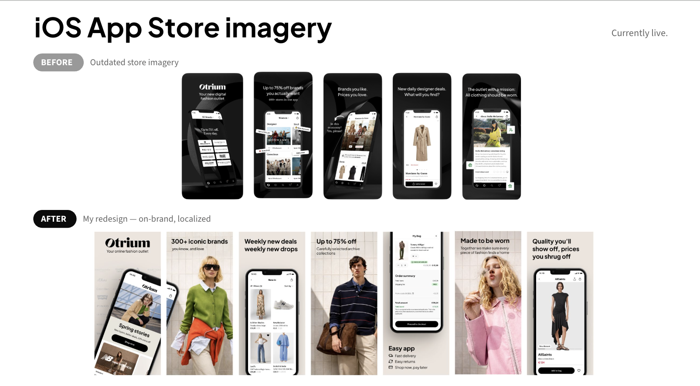

Product Design · A/B Testing · Systems
← Back to workOtrium: Platform & Conversion Optimization
Removing shopping friction through data-backed A/B testing, a frictionless checkout redesign, and foundational design tokens—driving an annualized €1.3M GMV impact.

The Challenge
Understanding first, conversion follows.
Otrium is an off-price fashion marketplace helping brands sell excess inventory. My mission was simple: uncover where shoppers get stuck, design hypotheses-driven fixes, and validate them with live data.
I tackled two core tracks: turning the homepage into a fast product-discovery engine and rebuilding Store Credit into a trustworthy retention feature. Along the way, I upgraded core design tokens to eliminate frontend UI debt.
Homepage Optimization
Fixing the "Escape Room"
Heatmaps and recordings showed shoppers treated the homepage like an escape room—skipping promo banners and rushing straight to search. It was acting like a transit hub instead of a discovery feed.
"A failed test isn’t a failed idea—it’s a diagnosis."
Using Coframe, I launched targeted experiments to streamline navigation, layout hierarchy, and copy:
Hierarchy Shift (+14.9%)
Moving popular categories above promotional banners generated Otrium’s biggest homepage conversion win.
Fixing Data (+10.0%)
An initial USP test lagged because logged-in users saw signup buttons. Re-targeting logged-out shoppers flipped a -3.4% dip into a +10.0% win.
Mobile Grid (+2.0%)
Proved that a compact, 2-column category grid beat horizontal swipe carousels on mobile.

Checkout Architecture
O-Credit: The 1-Click Toggle
Many users made one purchase and never came back. Otrium introduced Store Credit to boost repeat orders, but initial designs used confusing points and complex rules.
Through 7 design iterations and moderated usability testing with 7 proxy users, I made the key design call: eliminate gamified points and treat credit as pure cash with a 1-click toggle directly in checkout. We branded it as "O-Credit".
The Hypothesis
Treating credit as a transparent discount line (-€10) removes checkout hesitation and builds trust.
The Live Result (+150%)
A rolling A/B/C/D live test revealed a +150% conversion lift in second-order purchases for the €20 credit variant.
- Zero Edge-Case Debt: Designed full UI specs upfront for expired vouchers, partial credits, empty states, and API error states.
- Engineer-Ready Handoff: Delivered structured component states directly to B2C developers for clean implementation.
- Customer Validation: Early launch to 281 shoppers scored 4.6 out of 5 for checkout ease of use.
Design Systems & Platform QA
Tokens & The Megamenu
Fast experiments can create inconsistent interfaces. Alongside my main project tracks, I audited and upgraded Otrium’s Ozone Design System tokens and built global platform components.
"A fix made in the design system is a fix made everywhere."
- Ozone Token Architecture: Standardized tokens for corner radii, elevation, blur filters, and iconography line weights to ensure smooth dev handoffs.
- Desktop Megamenu: Designed and prototyped an A-Z brand navigation bar from scratch to make product discovery effortless.
- Pricing Clarity (RRP): Removed cluttered adviesprijs tags from listing pages, moving clean contextual explanations into Cart and PDP.
- App Store Redesign: Refreshed iOS/Android App Store screenshots with localized, consistent visuals carrying right into the app login.


Results & Impact
Measurable Growth
By grounding UX in user data, rapid testing, and clean system architecture, this work proved that thoughtful design directly powers commercial growth.
€1.3M GMV
Annualized revenue impact delivered across optimized funnels.
+28.4% Lift
Total conversion uplift across verified Coframe experiments.
"Excellent" Grade
Graduated with top assessment from Otrium leadership for independent execution.
"Ines was a fantastic addition to our product team at Otrium. She supported us on complex projects like the Store Credit journey, where she did a great job managing user research and preparing clean, well-structured design handoffs for B2C engineers. She constantly seeks out feedback, adapts quickly, and really owns her growth as a designer."
— Elena Verling, Product Design @ Otrium
"Contributing both technically on design elements but also by being a sharp and thoughtful pair of eyes on many things related to our e-commerce platform... I wouldn't hesitate to recommend her for roles!"
— Rob Myers, Director of Product, Technology & Data @ Otrium